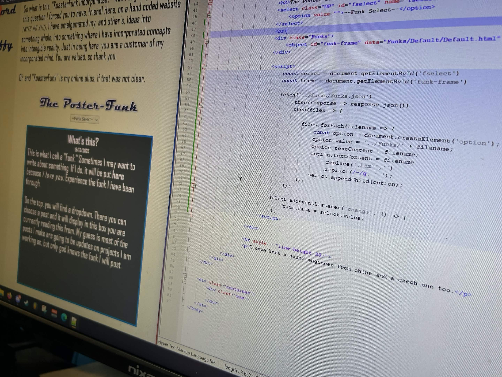

WOW IT'S WORKING. I had to learn a bit of JSON to get this feature to work, but I did struggle a lot with it. I hate to admit that I ended up having claude help me to get this to work, but the biggest reason is that the fetch() function only works when going through a server and I had no idea! That stumped me so hard, and I would have been running in circles if it wasn't for the AI telling me that what I was doing was fundamentally sound. Maybe I should go into how this works a bit?
Basically, I made this dropdown auto-populate with seperate .html files in a folder on the server. When you select one, it opens it through an object element. JSON was needed to list, fetch, and store variables to get the process to work. The hardest part was figuring out how to have these two languages talk to eachother. Or was the hardest part learning json? I don't care anymore, IT WORKS
